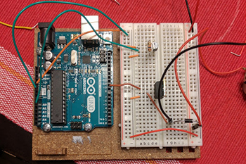

I briefly described this lesson and its implementation in a subsection of my maker education experiences, but if you're on this page, chances are you wanted to hear more about the lesson! In a course called PBI at UT (as part of the teacher preparation program there) students are required to design and deliver a three-day lesson that uses project-based instruction. In this course, I worked with a chemistry class of sophomores at Austin High and designed the three-day lesson based on stoichiometry, balancing reactions, and reaction types. Trying to come up with ideas, my teammates and I thought about using food chemistry, acid/base chemistry, and more, but after the suggestion by one of our professors to use a Rube Goldberg, we decided it would be a fun and interesting way to introduce and reinforce these concepts to the students.
The first day of the lesson was used to familiarize students with balancing equations through the use of nuts and bolts, and combining these to make chemical "compounds." On this first day, the students observed each of the four chemical reactions given to them. The reactions varied in type and outcome to show the students many of the different types of chemical reactions that exist, and the equations we chose are shown below.
In the end, the students didn't actually get to complete their machines. They had each individual piece ready to connect to create the larger Rube Goldberg, but lack of time prevented them from setting it up to perform its final task. This highlights some of the issues that come along with making in the classroom, in that it can be time consuming and does not guarantee completion of a project. However, the students got through all of the material in the lesson, so they were mainly just missing out on the completion of two days of work. This can be frustrating, but it only necessitates good planning when implementing a maker lesson to ensure that students can enjoy the experience while also getting through the material.
Many were wondering when we were developing this lesson how we would use the reactions to drive physical changes in the Rube Goldberg. The only reaction we were having trouble with was the endothermic reaction of barium hydroxide and ammonium thiocyanate, as it didn't create a physical change. To combat this, I designed a temperature sensitive motor to be used with an Arduino. The motor would selectively turn on when it reached a certain temperature below the baseline temperature of the room, so the temperature probe would be placed on the reaction flask to sense the dropping temperature. It was a relatively simple project, and it was fun to see it work! The arduino was wired as shown to the left and worked with a simple DC motor that spun around. The students who worked with this reaction chose to wind some thread around the spinning motor in order to pull a lever to push the Rube Goldberg forward.